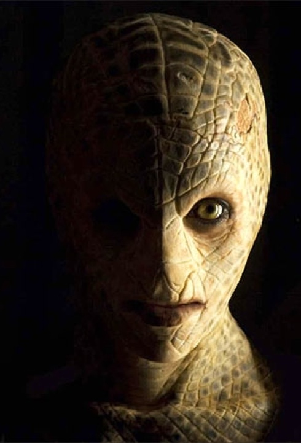

Extraterestrial Reach


In our search for extraterrestrial intelligence we must be prepared for, and even expect, great dissimilarities both in alien biologies and in the very nature of intelligence itself. This aspect of dolphin evolution leads us to the dolphin/alien example. The dolphins can serve as useful analogs for our hoped for communication with an extraterrestrial intelligence. They live in a medium with physical properties different from our own. They navigate, communicate, and may even think in terms of a different sensory modality, and some Cetaceans are so large as to present a unique communications problem in their own right. In addition their language, if such it turns out to be, is far beyond our ability to decipher without the aid of highly sophisticated computer technology. Learning to communicate with the dolphin could teach us many of the technical skills we will need, and present many of the same problems we may have to face in communicating with an alien intelligence.
Smaller Greys have been cloned to the bidding of the larger grays. They are much smaller then the other Greys at around 3.5 to 4.5 feet tall, stubbier fingers arms and legs, but are similar in other ways. (Same shaped head, eyes, ear holes, and small holes for nostrils). They don't seem to be as intelligent as the taller Greys and do much of the grunt work during probing and abductions while the taller Greys work on more scientific areas like collecting sperm and egg samples and working on genetic materials. Other alien researchers have assumed that there may be other types of greys out there with many names much like there are different races of humans such as the Bellatrax Greys, Zeta Reticuli, GREY TYPE C, and more but as to date these are the two types we can determine as true.
Reptilians from the Draco system are manipulative and deceiving by nature. These Reptilians are so advance that, they have surpassed the physical limitations of their material bodies. Reptilian Aliens from the ingest their nutrients through energy, but their needed food source is bad or evil energy. Reptilian Aliens from the Draco Constellation are also rumored to have created the race of aliens that we know of as Greys. This creation of a species was necessary for their survival as a race. As the Draconian civilization continued to grow and expand, they needed new sources of nutrition. Seeking other planets to infest with their evil agenda, they soon came to realize that a creation of cloned evil race would benefit them. Grey Aliens were created as a slave race to the Reptilians; however, as the Reptilians grew in numbers, so did the Greys. Soon a revolution would take place that would give birth to the Grey Aliens and their Agenda to find a cure for their cloned race that is slowly dying. Draconian Reptilians soon began to look for a new source of energy consumption and came across our planet (Earth). Here they observed a highly advanced race of Reptilian-like aliens known as Reptoids. Seeking to utilize the humans population on Earth, Draconian Reptilians sought out to destroy the Earth evolved Reptilians and began their Reptilian Agenda to manipulate a race of evil minded humans for their energy consumption. After successfully forcing many Earth evolved reptilians to leave Earth, Draconian Reptilians began to work their way into, and influence, civilizations of the past. Rumored reports state that some Earth evolved Reptilians still exist beneath the streets and farms of our planet, secretly counter acting the Draconian Reptilian Alien agenda.

Some believe that there could be as many as four intelligent alien civilisations in existence in our galaxy. But because of the distances involved, they don't think we will ever encounter them. Much of their inspiration for this imagined extraterrestrials comes from the strange deep-sea life forms here on Earth. Although extraterrestrial jellyfish would not be able to survive in our atmosphere, others have suggested that similar living beings do exist in our atmosphere. Author and historian Trevor James Constable pioneered the theory that many UFOs are living beings, or sky critters as he calls them. And he describes them as amoebalike life forms existing in the plasma state. Similarly, author and scientist Ivan T. Sanderson also wrote about atmospheric beings. He suggested, If there are living things either in our upper atmosphere or in space beyond that can and sometimes do come down to the surface of our earth, they could be electrical animals (as we in fact are). They could produce light, emit stinks and noises and maybe even electromagnetic and other radiations. More especially if they are pure energy feeders. While most supposition by scientists regarding extraterrestrial life is based on life as we know it, some recalls their ideas of extraterrestrial jellyfish an example of life not as we know it. Ultimately, communicating with the aliens in our oceans may teach us much about our ability to accommodate our philosophy and our ethics to the presence of a non-human intelligence.
The evidence is building up and the people are waking up to the fact that we may have been created by Aliens! Scientists have even discovered what appears to be genetically modified seeds in the earths atmosphere suggesting they could have been made by Aliens to create LIFE on earth According to MANY other top leading researchers that are far more open-minded, it does not seem far-fetched that humans were created by an advanced extra-terrestrial civilization in the far distant past, possibly with the assistance of genetic engineering, something that could perhaps help to explain the 223 plus alien genes present in our very own DNA. Many important leading figures in the world have suggested that Humans were created by Aliens! Francis Crick an English biochemist, who has actually won the Nobel prize, discovered in 1953 the DNA structure. He sustained that extra-terrestrial beings discovered our world in the distant past and decided to create intelligent life on the planet. The increasing evidence about our existence on Planet Earth can NO LONGER be ignored. Does this mean that religion is no longer important though?! Well NO, but it is important for the free world to keep an open mind on this very important subject? YES!!